La modélisation d’accompagnement
quelques exemples au PPZS
Par E. Delay, T. Mbaye, W.'s Daré, P. Diop, J.-D. Cesaro 15 mai 2023 - CS PPZS - Dakar
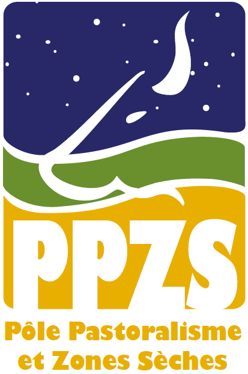ComMod, une histoire, une communauté
Time line

Différents domaines

ComMod : Un ancrage épistémologique
« a wicked problem is a problem that is difficult or impossible to solve because of incomplete, contradictory, and changing requirements that are often difficult to recognize »
Rittel 1973
« when uncertainties are either of the epistemological or ethical kind, or when decision stakes reflect conflicting purposes among stakeholders »
Funtowic et Ravertz 1993 (p. 750)
ComMod et les modèles
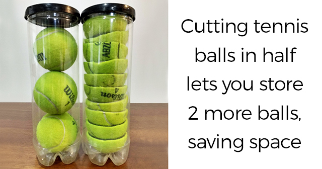ComMod un processus itératif

ComMod un processus scientifique
Au coeur du processus scientifique, on questionne le processus expérimental
«Le dispositf expérimental est lié au système observable par une hypothèse de non déformation. Le dispositif expérimental n'existe que sous cette condition!»Gomart 2004 (p. 95)
ComMod par des exemples au PPZS
Des outils et une posture
L'accompagnement des populations par les chercheurs, et des chercheurs par les populations
Projet Dundi-Ferlo
Assurer une reforestation utile et pérenne - GMV
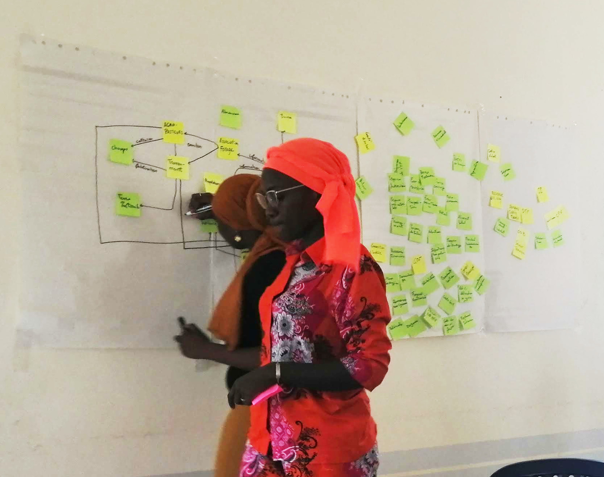 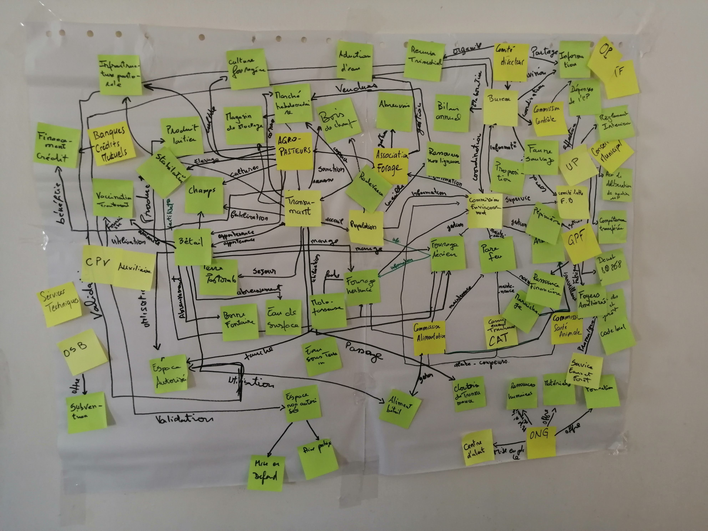Utilisation de modèles conceptuels PARDI
Projet CASSECs
Co-identifier les pratiques agropastorales pour améliorer le bilan carbone à l’échelle du territoire


Le modèle conceptuel

Le jeu testé avec des agro-pasteurs
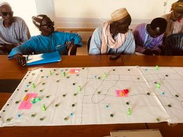 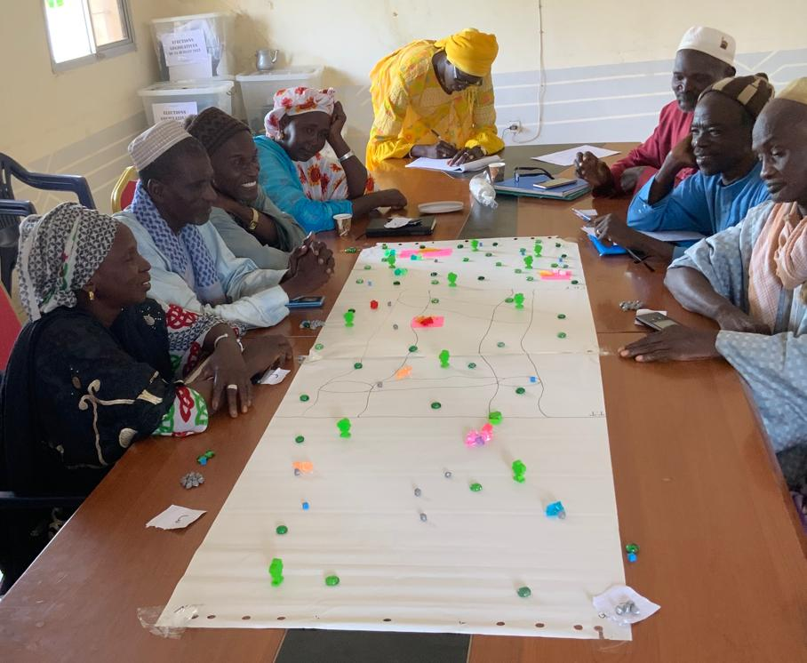Stage de Anna Ndiaye (ENSA de Thiès), 2022
Une typologie des stratégies de déplacement
Synthèse de 35 trajectoires jouées
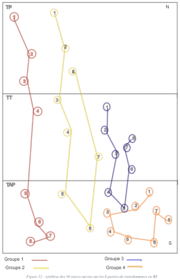 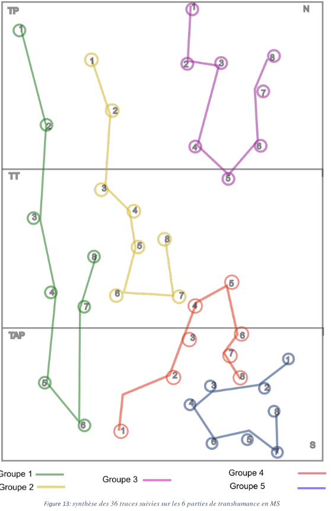Projet DSCATT
Développement de ACARDI (Perrotton et al. 2021)
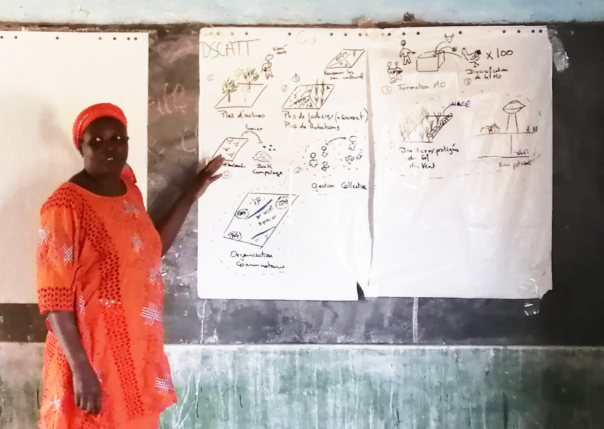 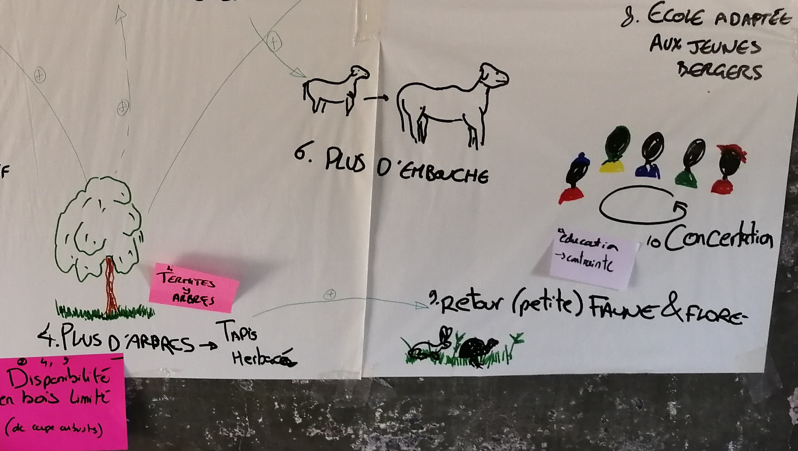Prise en charge d'aspiration particulière
Modèle comme outil anthropologique (Stage de L. Broutin 2022)
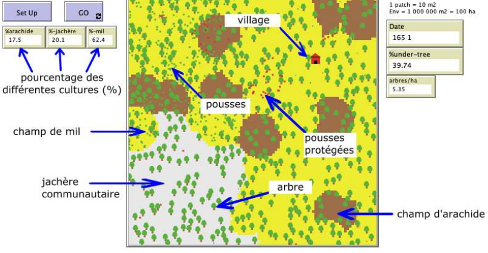 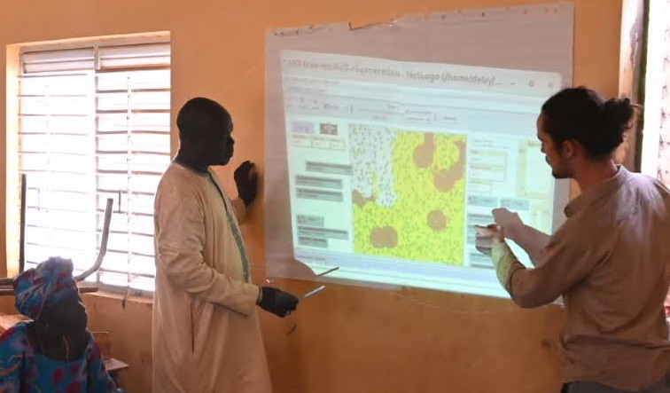Interroger le modèle et les acteurs
Vision des acteurs sur la viabilité
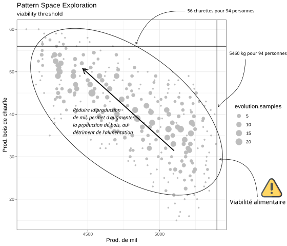Projet GASL-LDB
Le modèle acteur de la discussion
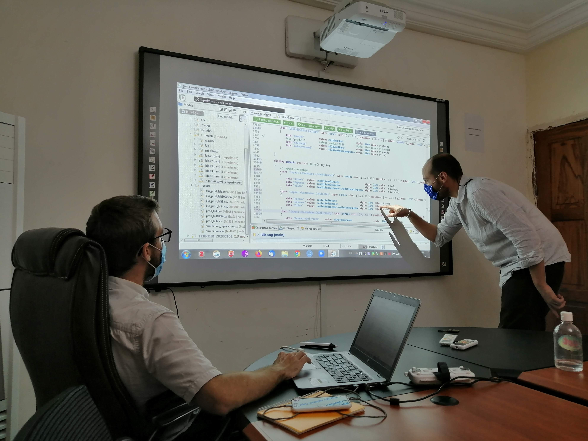 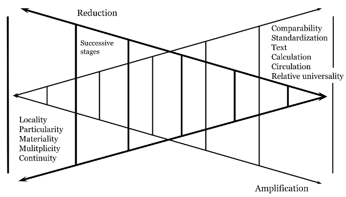Pour Conclure : quelques objectifs
- Produire des connaissances
- Sur les systèmes de gestion de ressources naturelles et des territoires
- Cheminement progressif et traçable vers une meilleure compréhension de processus de décision collective
- Le modèle pour mettre en débat des représentations
- Accès à différents formats de connaissance
- Emanciper les participants